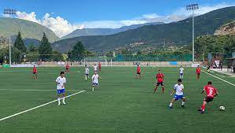
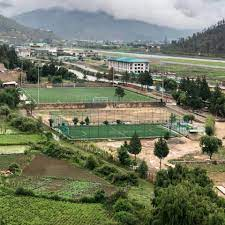

THAZAY is a Bhutanese construction company specializing in general contracting, construction management and design-build. Throughout our experience, which spans more than two decades, we’ve succeeded by providing a wide range of construction solutions to our clients and delivering a whole lot of quality work.
We have stayed true to our humble beginnings and believe our clients continue to choose us because of our experience, intigrity and the greater value we provide. Beginning in pre-construction, we take an integrated approach that supports the planning and design phase allowing a seamless transition from the conceptual phase into construction.
Chedup is the founder of THAZAY Construction. He long years of hands on experience in the construction services industry and is known for his grit and passion in delivering quality, cost efficient and timely execution of Projects. In this context, THAZAY Construction has shown itself competent to complete projects within the planned deadlines and budgets under different circumstances. The company employs more than 50 full-time professionals and have more than 20 years experience in the construction industry. The company collaborated with different contractors executing large scale projects in the following areas:
We have team of experienced, skilled and qualified employees to oversee civil and multi disciplinary projects – airport, commercial buildings, school buildings, show room, urban development, road network, water & sewage development. Team members consists of the following professionals:

